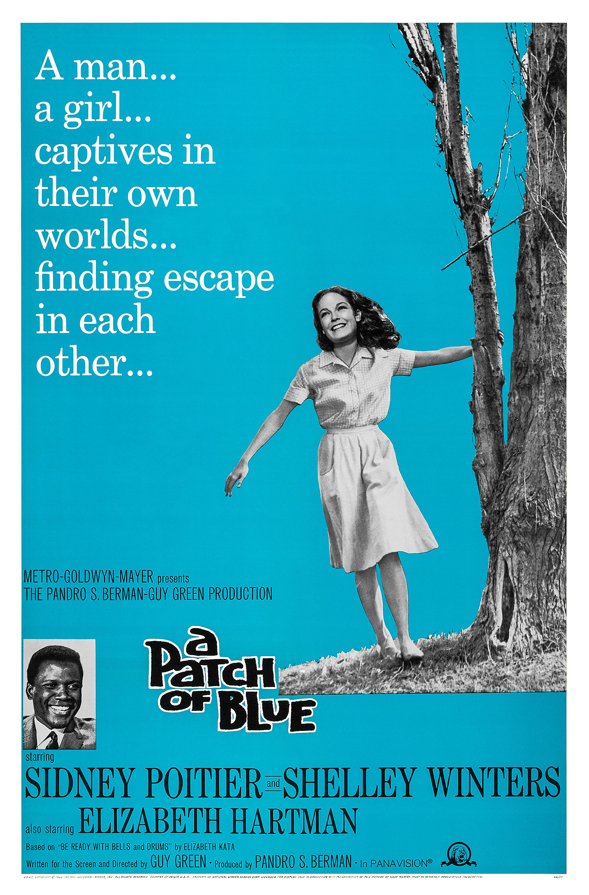

A Patch of Blue
38th Academy Awards
(Oscars 1966)
5 Nominations, 1 Award
| Nominations | ||
|---|---|---|
| Category | Nominees | Result |
| Actress | Elizabeth Hartman | Nominated |
| Actress in a Supporting Role | Shelley Winters | Won |
| Cinematography (Black-and-White) | Robert Burks | Nominated |
| Art Direction (Black-and-White) | Charles S. Thompson, George W. Davis, Henry Grace, and Urie McCleary | Nominated |
| Music (Music Score--substantially original) | Jerry Goldsmith | Nominated |